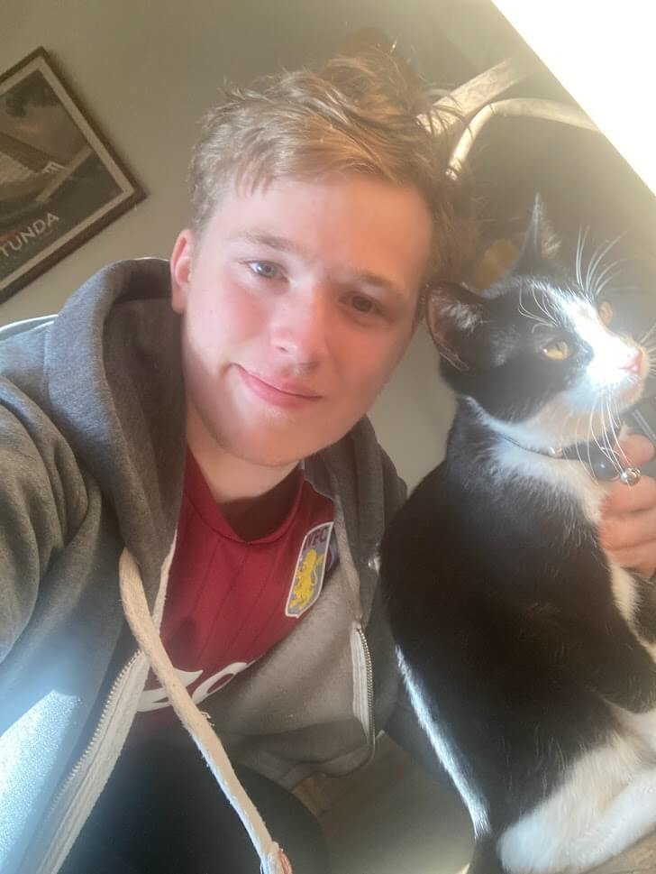
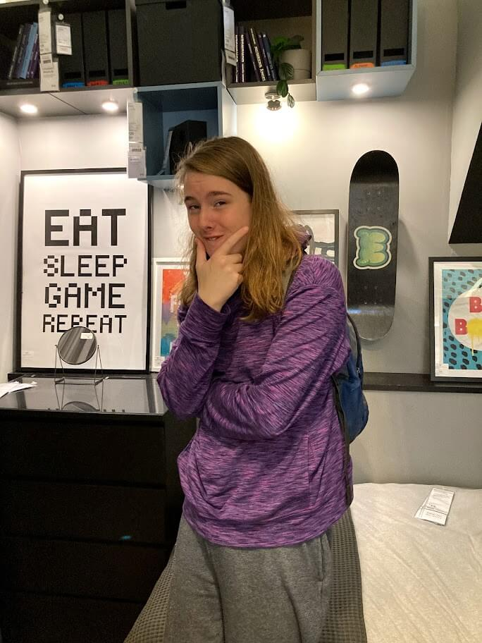
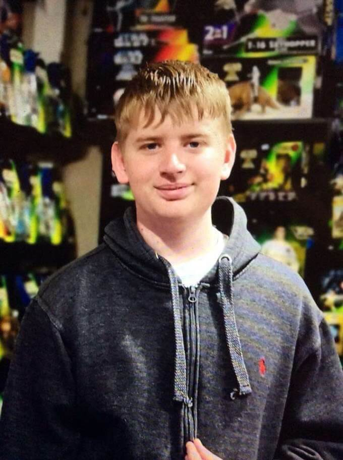

James March

James is the founder of the company and lead developer on all
projects (including the website you are reading right now!).
He is from Birmingham and an avid supporter of Aston Villa FC
and has always had a passion for programming and software
engineering. He founded the company with the aim of partially
creating a creative output for himself and his team as well as
an avenue to create educational content for early years
students, where quality products are so vital.
He started programming and developing in his early teens on a
Raspberry Pi he purchased second hand from his local computer
shop. He went on to attend King Edward VI Five Ways from which
he graduated with sufficient A-Levels to enter the University of
Sheffield, furthering his interest in computer science and
mathematics as well as giving an avanue to creatively express
himself.
After the COVID-19 outbreak in 2020, he worked for several
different companies, amongst them Royal Mail, Uber and the
Birmingham based East Asian restaurant Blue Piano. During this
time of uncertainty, he also spent much time refining his own
programming skills, learning to program in C# and developing
game projects, which was the basis for his desire to create
educational games in JavaScript.
He is very excited about the future of this company and
considers his main mission to create modern educational software
for children of all ages and for the general public. As the lead
programmer and founder of the company, his involvement in
projects is major and so he wishes that his contributions can be
successful and cannot wait for people to try his programs.
Dan Hebert

Dan has been a close friend of James' since they were
both in Primary School. he is the lead marketing and UI designer
for the company and a competant programmer in his own right. He
is a massive fan of cats and simulation-style video games,
aiming to someday move on and produce / create his own. He was
one of the founding members of the company and has put time and
passion into making his dream a reality.
Born and raised in Birmingham, Daniel attended local schools
with James and eventually moved on to doing a BTEC in Game
Design at Access Creative College in Digbeth, which is hwere he
found his passion of designing intricate systems and elements
regarding games in general. He took this passion further by
enrolling in the University of Falmouth for the same course,
where he continues his studies to this day.
Experienced in game design, with his games being featured in
shows such as EGX, Daniel brings a wealth of real-world
experience into the team as well as leadership and organisation
skills making him the ideal person to lead the team to success
in its launch.
He finds games and general design work, which is a big part of
his hobby to allow him to be creative. and takes this energy
forward to make new art, tools and projects in the future. He
also tries to build on his talents and implement this in the
company where he is able to.
Upon meeting James and giving him a quick tour of what skills he
had to offer, they both agreed to start up the company together
and have been working on education projects and products ever
since.
Sam Forward

Sam Forward is a Biology student at the University of Sheffield
originating from Essex. He first met James and the team at his
time at Sheffield as they both were at the same flat, and since
have become friends and associates. He has a huge interest in
biology and statistics, as well as a keen interest in politics
and political science.
His main experience regarding the company however is his past
work in statistics and design, and will also be providing
significant input to the content of the website. He is the lead
designer graphically for the games that are produced at the
company and has vast experience with the Adobe suite as well as
many other illustration programs, and has a good knowledge of
how to make content look nice and appealing.
His main hobbies include running, watching Top Gear and playing
video games, including the likes of Overwatch, Rust, Stardew
Valley, A Hat in Time, Crash Bandicoot N. Sane Trilogy, and more
recently Dark Souls. Having been involved in physical work
before, working on art was never an issue for him.
His dream for the company is a place where they can have a
comfortable and enjoyable environment to work, whilst creating
an entertainment company with a focus on enjoyable content. He
has natural leadership and social skills and isnt afriad to let
his opinion be known.
He is an invaluable member of the team and we are all very much
looking forward to seeing where things go from here.